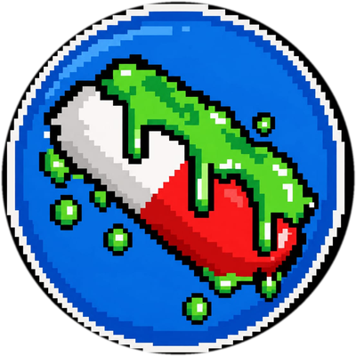
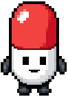
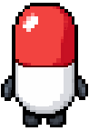
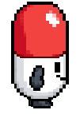
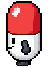
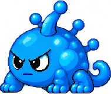
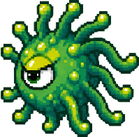
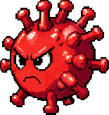
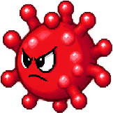
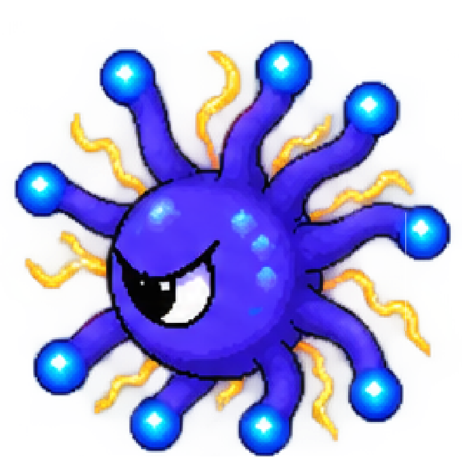

💊
Nombre del integrante 1
Rol: programación"Una frase divertida que lo describa."
Poder especial: Arreglar bugs a las 3 a. m.

Hospital de caos controlado
CRAZYMEDICINE es el juego donde cada decisión puede salvar la vida del paciente o causar consecuencias imprevistas. Combate, experimenta y descubre qué sale mal.
Un vistazo rápido a cómo se juega CRAZYMEDICINE. Usa las flechas o los puntos para recorrer las capturas.
Recorre los pasillos, la farmacia y las salas de camas mientras esquivas virus y curas pacientes. Cada zona del hospital esconde su propio reto: desde reponer medicamentos hasta estabilizar a los pacientes más graves.




Diseñado en los laboratorios más caóticos del hospital, este pequeño comprimido pixelado es el encargado de limpiar las peores infecciones del cuerpo. ¡Muévelo en todas las direcciones para esquivar los virus!
Conoce a las amenazas microscópicas que infectan a tus pacientes. Estúdialos bajo tu propio riesgo.

Una infección que inunda los pulmones del paciente. Tose esporas verdes que hacen toser a todo el que se acerque.

Un virus verde de mil brazos que se pega a todo. Provoca fiebre, estornudos y ganas de quedarse en la cama.

Una esfera roja con espigas que se esparce rápido por el aire. Deja al paciente sin aliento y sin olfato.

Un virus golosón que lanza cubos de azúcar sin parar y desordena la energía del paciente.

Un virus eléctrico que sube la fiebre de golpe y llena al paciente de chispazos y dolor de cuerpo.
CRAZYMEDICINE no es solo caos y pastillas locas: cada partida está pensada para conectar con el Objetivo de Desarrollo Sostenible 3 de la ONU, "Salud y Bienestar". Cada vez que curas a un paciente, el juego te muestra qué virus lo afectaba, cómo se cura y cómo se previene en la vida real.
Nombre de la infección que tenía el paciente.
Explicación breve del tratamiento aplicado en el juego.
Un consejo real para evitar contagiarse.

CRAZYMEDICINE nació como nuestro proyecto de grado. Somos tres estudiantes que se hicieron una pregunta rara: ¿y si aprender sobre salud pudiera ser tan divertido como jugar?
De esa pregunta salió un hospital lleno de virus, pastillas locas y un pequeño héroe llamado Dr. Pildora, además de muchísimo ensayo y error.
Desde entonces construimos experiencias donde equivocarse no solo se permite: se celebra.
"Una frase divertida que lo describa."
Poder especial: Arreglar bugs a las 3 a. m.
"Una frase divertida que lo describa."
Poder especial: Convertir ideas en virus pixelados
"Una frase divertida que lo describa."
Poder especial: Inventar enfermedades con mucha personalidad
No necesitas bata de medico. Solo curiosidad (y ganas de que algo explote).
Jugar ahora